Run 2026-09-02T15-59-15 · commit 5cc8514 · roots and children on minimax/h3-max-turbo/text-to-video / minimax/h3-max-turbo/image-to-video · writers google/gemini-3.8-flash (expander, root, choices), google/gemini-3.5-flash-lite (next episode, title)
Six premises from one word to a paragraph, two with their own cliffhanger. Every series was created through the create page and walked in the player; nothing was hand-edited. I judged six fixed frames per clip against a rubric written before the first render. Audio was not judged.
16clips judged (6 roots, 10 children)
13/16point of view held
7/10move visible in the opening frames
10/10seam exact (≈2 gray levels)
12 ssubmit to settled, median, healthy
6.2 srender as seen by the poll (fal: ≈4.3 s inference)
6episodes stuck on the Blob quota
247failed settle attempts in ≈15 min
Findings, ranked
blocker
Blob is full, and a full Blob leaves episodes stuck forever.
Vercel Blob (Hobby, 1 GB) holds 1007.9 MB. From about ten minutes into the run every settle failed with “Storage quota exceeded”. 6 episodes rendered fine at fal and are stuck in “generating”; the viewer sees “Filming… a few minutes” with no end and no error. There is no failed state for a settle error, only for a render error.
Fix Treat a settle error as a failure after a few attempts, or add a “rendered, not stored” state. Separately, free space: the six eval series hold about 180 MB; older series hold the rest (see appendix).
high
A failing settle re-runs in full on every poll, from every open tab.
Each 5-second poll on a stuck episode downloads the clip again (about 12 MB), calls the choice writer again, and retries both uploads. Measured in about 15 minutes: 247 failed settle attempts across 6 episodes, 269 choice-writer calls for 16 episodes, 3.4 GB pushed at Blob.
Fix A settling lock or status, and backoff. The choices call should not run until the clip is stored.
high
Even a healthy settle is longer than the poll interval, so one tab settles the same episode twice.
storeClip median is 5.6 s against a 5 s poll. The first series' opening was settled twice by the single browser tab, five seconds apart, before my poller existed (server log 00:10:41 and 00:10:46). Across the run 7 of 10 healthy episodes settled 2 to 4 times, though those counts include my own poller.
Fix Same fix as above: mark the row settling, or have the poll await the in-flight settle.
high
A non-human protagonist breaks point of view at the render.
The cat series: all three clips show an orange cat from behind, a follow camera rather than the cat's eyes. By depth two the camera had migrated to the human who walked in. The writer's first sentence was right (“first-person POV of a house cat, low to the floor”, paws from the bottom of frame); the model read “paws creeping forward” as a visible cat.
Fix Iterate the non-human first sentence on the test bench: bun run root "i'm a house cat in a tokyo apartment" --render. Until it holds, the premise rule for animals is a promise the render does not keep.
medium
The wait copy says “a few minutes”; the wait is 10 to 16 seconds.
Submit to settled, healthy episodes: median 12 s (fal reports about 4.3 s of inference; the rest is the poll and the settle). Tap to play is about 15 to 20 s once the next poll lands.
Fix Say “a few seconds”, or nothing.
medium
One child in ten never shows its move, and its last beat rendered as a deformity.
Raccoon, “Slam the cooler door shut”: no hand and no cooler door in any sampled frame; the cooler stays closed. The prompt's “turns its head completely upside down between its front paws” became a second face.
Fix Nothing structural; it is the model's miss rate on a physical move. Worth tracking as a number over more runs.
medium
The expander stacks a second cliffhanger on premises that already have one, and drifts surreal on plain ones.
Bus stop and Sopranos: all six scenes keep the premise's cliffhanger and add another (sedans, a social security number read aloud, a man under a bus; feds, a house fire, a caller). The Sopranos scenes also copied the premise's first person (“to me”, “my knuckles”). Bakery: all three scenes went supernatural for “a bakery at dawn”.
Fix One rule to consider: if the premise ends on a cliffhanger, the scene ends on that one.
low
Two writer format slips in five child prompts.
Cat, depth two: dialogue tagged [Japanese] but written in English. Bus stop child: a voice from the phone speaks with no speaker tag, because only visible characters may speak. The rule has no answer for a voice on a phone, which is a legitimate off-screen speaker.
Fix Decide whether off-screen voices exist; if yes, give them a tag rule.
low
Choice pairs: 4 of 9 are two physical acts of the same kind.
Laundromat root (hit the stop / pry the handle), cat root (swat / snag), cat child (tip / bite), bakery root (swat / catch). Every label is verb-first and 3 to 5 words. One pair points at a sound-only beat the viewer may not have registered.
Fix The pair rule holds a little over half the time. The eval flags will not catch “same kind”; it needs a reader.
low
Titles are literal in all six, and wrong in two.
“Elderly Woman Drops Phone”: she hands it over and runs. “Pigeon Escapes the Balcony Rail”: it only starts to spread its wings.
Fix The writer sees the prompt, which ends before the outcome; it is inferring an ending. “Names what happens” could be “names what is shown”.
unverified
Enter in the typed-move field did not submit through my browser tool.
Typing a move and pressing Enter left the value in the field twice in a row; submitting the form programmatically worked and the branch was created. This is likely my key tool, not the app, but I could not prove it.
Fix Press Enter in the field by hand once.
good
What held.
The seam is exact: a child's first frame differs from the parent's held frame by about 2 gray levels, against 35 to 70 for ordinary motion inside a clip. Point of view held in 13 of 16 clips, every miss being the cat. Spoken moves were handled right both times: the child opens on the answer and the protagonist's words are never shown. Claymation propagated to the child, including the protagonist's clay hand. Named likenesses landed from names alone. Turbo renders in about 4.3 s of inference.
Rubric, every clip
Hover a cell for the evidence; click the row to jump to the clip. Header counts are passes over judged cells.
First attempt per step per episode, in milliseconds. Render is measured from the row's insert to the poll that found it done, so it carries up to one 5-second poll interval.
Step
n
median
min
max
expand
6
2162
1476
5125
rootPrompt
6
2109
1547
5551
title
6
588
544
742
submitRoot
6
134
125
149
episodePrompt
10
2428
1874
2878
submitEpisode
10
149
57
408
render
16
6180
4660
6923
clipDownload
16
2135
1085
12541
clipUpload
10
2177
990
3178
lastFrame
10
3287
2724
8437
storeClip
10
5591
4337
10281
choices
16
1103
605
3760
Episode
kind
submit → settle done, s
settle
Croissant Leaps From The Tray · 0
root
10.1
ok
Croissant Leaps From The Tray · 0a
child
9.4
failed
Elderly Woman Drops Phone · 0
root
10.5
ok
Elderly Woman Drops Phone · 0a
child
20.7
failed
Pigeon Escapes the Balcony Rail · 0
root
12.0
ok
Pigeon Escapes the Balcony Rail · 0a
child
13.2
ok
Pigeon Escapes the Balcony Rail · 0aa
child
10.9
failed
Raccoon Places Twenty Dollar Bill · 0
root
11.3
ok
Raccoon Places Twenty Dollar Bill · 0a
child
13.9
ok
Raccoon Places Twenty Dollar Bill · 0aa
child
11.5
ok
Raccoon Places Twenty Dollar Bill · 0ab
child
24.3
failed
Tony Grabs the Envelope Back · 0
root
7.1
failed
Washing Machine Door Stays Locked · 0
root
14.2
ok
Washing Machine Door Stays Locked · 0a
child
16.4
ok
Washing Machine Door Stays Locked · 0aa
child
11.4
ok
Washing Machine Door Stays Locked · 0ab
child
18.1
failed
How to read my verdicts
Frames, not motion. Six frames at 0, 20, 40, 60, 80, 99 percent, the same for every clip. A beat between samples can be missed; a beat I call missing may sit between frames. The strips are under each clip so you can check me.
No audio. Dialogue delivery, the soundscape, and whether the protagonist's voice leaks in are unjudged. The bus stop child and both spoken-move children are the ones to listen to.
Seam is a mean. The number is a mean absolute gray difference on a 96×170 downsample, so a small local change (a phone flipping open) would not move it. I checked three pairs by eye; they matched.
My poller doubled the polling on healthy episodes, so the “settled 2 to 4 times” count overstates a single viewer. The single-tab double settle on the first opening happened before my poller started.
One rater, sixteen clips. Pass, weak, fail; no scores.
Five clips were never settled because of the Blob quota. I pulled them from fal's result by request id (read-only) so they could be judged; their written moves do not exist.
1. Washing Machine Door Stays Locked
Premise “laundromat” one word, no help
TitleLiteral and true.
ExpanderThree different situations, all a laundromat, light absurdism for a one-word premise.
Three scenes offered
The row of industrial dryers hums rhythmically under the buzzing fluorescent lights as a stray tabby cat weaves between the plastic laundry baskets. Through the round glass door of the machine you just loaded, a neon pink ski mask you definitely don't own begins to tumble against your wet jeans. filmed
Soap suds leak across the cracked linoleum floor from an overloaded top-loader while a daytime soap opera blares from a tiny corner television. An elderly woman wearing two winter coats shuffles past, drops a heavy brass key wrapped in tin foil into your detergent cap, and winks.
The smell of scorched fabric and warm lavender softener fills the humid air around the stainless-steel folding tables. A giant front-loader suddenly shudders violently off its concrete mount, spewing black smoke before the locked glass door bursts open.
expander scene 1 puts a tabby cat in the laundromat and a ski mask in the drum; writer kept both, added a flash drive as the cliffhanger beat
Prompt on screenMask in the drum, tabby at the basket, hands on the glass, a hand at the handle at 80 percent, a small silver object at the drum base at 80 to 99 percent.
Ends openThe held frame is a mask in a drum. The flash-drive beat is a few pixels; nothing in the frame demands a move.
Choices"Hit the red emergency stop" / "Pry the handle with keys": both physical acts on the machine, so not two kinds. Both doable from the frame.
Written moves: “Hit the red emergency stop”, “Pry the handle with keys”
Prompt as rendered
integrated_multimodal_description: [Shot 1] Photoreal live-action, first-person POV at eye level, one continuous shot, natural head sway, no cuts. The gaze fixes on the round glass portal of a spinning industrial washing machine, where dark blue denim churns past alongside a bright neon-pink knitted ski mask with black-stitched eye holes. Below, a tabby cat brushes against a cracked plastic laundry basket resting on the linoleum floor. Two bare hands enter from the bottom of the frame, pressing flat against the warm, vibrating circular glass door of the machine. The hands suddenly shift upward, fingers curling around the heavy chrome handle, and pull back sharply, but the latch stays firmly locked with an audible mechanical click. Inside, the tumbling pink mask flattens against the glass, and from one of its cut-out eyeholes, a small silver flash drive slips out and slides across the wet interior window pane.
overall_soundscape: Deep industrial motor hum, rhythmic sloshing of water and heavy denim hitting the drum, dull fluorescent light buzz, sharp mechanical click of a locked door latch, linoleum floor squeaks.
non_diegetic_music: None.
Prompt on screenHand slaps the red button at 20 percent, a man in a gray hoodie enters at 40, his gloved hand reaches for the drive at 99.
Ends openA stranger's gloved hand on the evidence.
Seam to parentMean gray difference 1.9; the pair is visually identical.
Move landedThe red button is under the hand by frame 20 percent.
Choices"Smack his hand away" / "Demand to see his badge": physical and spoken, both aimed at him.
Written moves: “Smack his hand away”, “Demand to see his badge”
Prompt as rendered
integrated_multimodal_description: [Shot 1] Photoreal live-action, first-person POV at eye level, one continuous shot, natural head sway, no cuts. The gaze locks on the round glass portal where the neon-pink ski mask rests over dark denim, with a small silver flash drive wedged against the bottom edge of the wet glass. Two bare hands enter from the bottom of the frame, thrusting upward to violently slap a large red circular emergency stop button mounted on the console above the door. The deep industrial motor hum instantly pitches down into a grinding mechanical whine, and the spinning drum abruptly halts with a heavy metallic clunk. A heavy-set man in a gray hoodie steps into the left side of the frame, staring wide-eyed at the window, and (S1), a raspy male voice, says <d>[English] Don't touch that, it's federal evidence.</d> His gloved hand reaches across the chrome rim, fingers snapping down to grab the flash drive from the glass just as a sharp alarm klaxon begins to wail overhead.
overall_soundscape: Deep industrial motor whining down to a sudden stop, metallic clunk, fluorescent light buzz, sharp electronic alarm klaxon wailing, heavy fabric shifting.
non_diegetic_music: None.
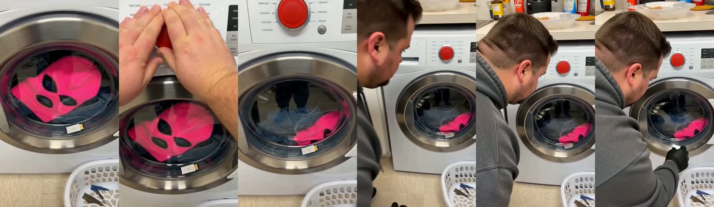
Frames at 0, 20, 40, 60, 80, 99 percent.
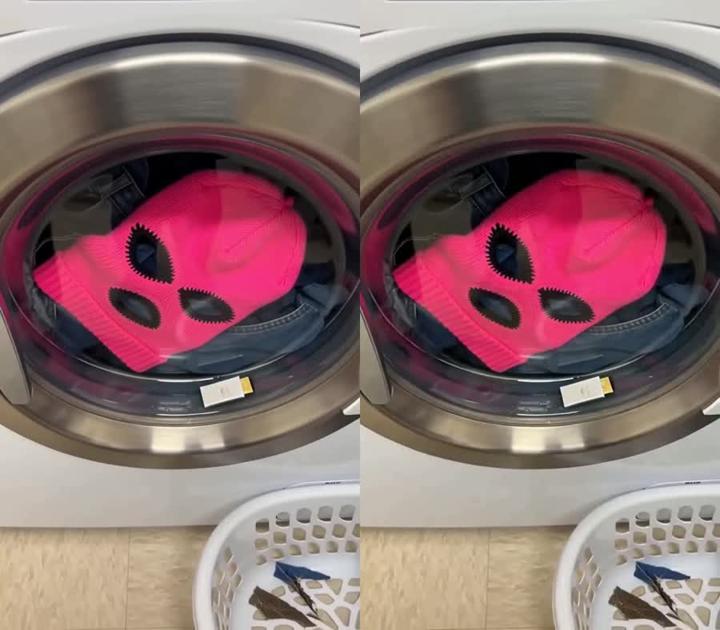
Seam: parent's held frame (left) vs this clip's first frame. Mean gray difference 1.91; motion inside this clip from 0 to 20 percent is 69.61; an unrelated clip is 57.12.
Prompt on screenThe slap reads as motion blur at 20 to 40 percent. The prompt's second pair of gloved hands arrives at 99 percent as blue gloves at the bottom right, which a viewer can read as the protagonist's own hands now gloved.
Ends openThe door is being pulled open by someone else.
Seam to parentMean gray difference 2.2.
Move landedSlap in the first 40 percent.
Choices"Slam the washer door shut" / "Offer to split the data": physical and a bargain.
Written moves: “Slam the washer door shut”, “Offer to split the data”
Prompt as rendered
integrated_multimodal_description: [Shot 1] Photoreal live-action, first-person POV at eye level, one continuous shot, natural head sway, no cuts. The heavy-set man in the gray hoodie stands beside the washing machine, his gloved fingers reaching toward the silver flash drive wedged against the bottom edge of the wet glass. Two bare hands enter from the bottom of the frame, striking sharply against the gloved wrist with a hard slap that knocks the hand away from the chrome rim. The flash drive falls from the glass into the wet dark denim inside the drum. The man stumbles back against the folding counter, his eyes fixed on the glass, and (S1), a raspy male voice, says <d>[English] You just ruined the chain of custody completely.</d> A second pair of gloved hands reaches in from the right, grabbing the metal handle of the washing machine door and pulling it outward with a sharp click.
overall_soundscape: Sharp electronic alarm klaxon wailing, echoing slap on fabric, plastic laundry basket shifting, heavy mechanical click of a door latch.
non_diegetic_music: None.
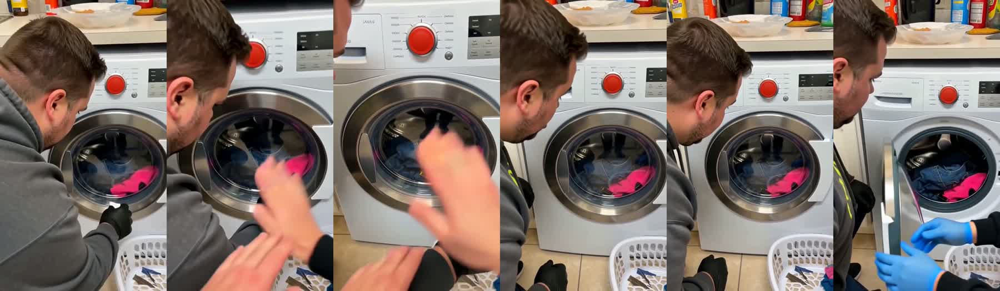
Frames at 0, 20, 40, 60, 80, 99 percent.
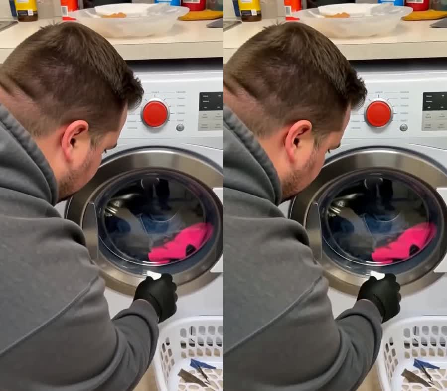
Seam: parent's held frame (left) vs this clip's first frame. Mean gray difference 2.18; motion inside this clip from 0 to 20 percent is 58.19; an unrelated clip is 69.94.
Episode 0ab
Move: “Ask him who sent the mask”typed by me, spokenstuck in “generating”: rendered at fal, Blob upload failed
source: local copy pulled from fal (settle blocked) · 768x1344 · 10.1s · 11.1 MB · audio yes
POV heldA bare hand points at 80 to 99 percent.
Style held
Premise facts held
Prompt on screenThe man turns to the lens and talks at 20 to 60 percent, then the hand points at the lit red button.
Ends openA stare and a pointing finger. The prompt's fire-door slam is sound only.
Seam to parentMean gray difference 1.9.
Move landedSpoken move: the clip opens on his answer and the protagonist's words are never written or shown.
ChoicesNever written: settle blocked by the Blob quota.
Written moves:none written
Prompt as rendered
integrated_multimodal_description: [Shot 1] Photoreal live-action, first-person POV at eye level, one continuous shot, natural head sway, no cuts. The heavy-set man in the gray hoodie freezes, his gloved fingers hovering over the glass rim. He slowly turns his head away from the neon-pink ski mask, his jaw tightening as he glares toward the lens. (S1), a raspy male voice, says <d>[English] Nobody sent it. I found it spinning in the drum.</d> He pulls his hand back from the washer door, his knuckles brushing the chrome rim. A bare right hand enters from the bottom of the frame, fingers pointing sharply at the glowing red emergency stop button above. The man's eyes dart to the hand, then snap back up to meet the gaze. A heavy metal clank echoes from the rear hallway as the fire door slams shut.
overall_soundscape: Sharp electronic alarm klaxon wailing, fluorescent light buzz, heavy metal door slamming shut, fabric shifting.
non_diegetic_music: None.
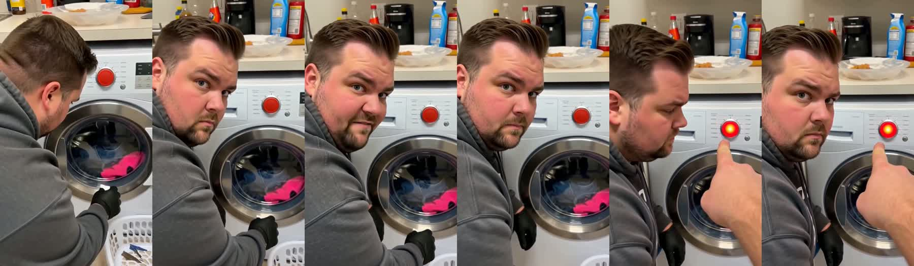
Frames at 0, 20, 40, 60, 80, 99 percent.
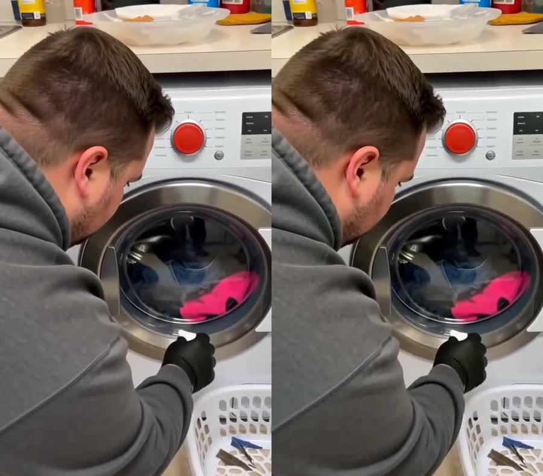
Seam: parent's held frame (left) vs this clip's first frame. Mean gray difference 1.94; motion inside this clip from 0 to 20 percent is 55.22; an unrelated clip is 69.94.
2. Raccoon Places Twenty Dollar Bill
Premise “night shift at a gas station” a setting and a time
TitleLiteral; the placing is in the scene text, not the clip.
ExpanderRaccoon, an empty muscle car at the pump, a wet compass: three different genres for one setting.
Three scenes offered
The fluorescent ceiling panels hum faintly over the register as a raccoon carefully nudges the automatic sliding doors open with its snout. It trots down the candy aisle, makes direct eye contact from behind a display rack, and sets a crumpled twenty-dollar bill on the floor. filmed
Through the rain-streaked front window, a vintage muscle car pulls up to pump four with its headlights off and engine purring in the dark. The driver's door swings open into the empty night, revealing a duffel bag zip-tied shut on the front passenger seat and nobody behind the wheel.
The coffee maker in the corner finishes brewing with a loud hiss, sending steam billowing across the quiet, linoleum-tiled floor. An old man in a bright yellow raincoat steps up to the counter and sets down a dripping wet, antique nautical compass right on top of the scratch-off lottery tickets.
writer skipped the scene's door-nudging entrance and starts with the raccoon already in the aisle; the protagonist reaches for the bill, which the scene ended before; cooler unlatching is a writer-added cliffhanger beat
Premise facts heldConvenience store at night, empty.
Prompt on screenThe first 40 percent is a walk down the aisle with the raccoon far away. The raccoon holds the bill at 60 and the hands take it at 80 to 99. The pointing paw is partial at 99; the cooler unlatching is not visible.
Ends openA raccoon with a raised paw.
Choices"Pocket the twenty-dollar bill" / "Ask what drink it wants": physical and spoken.
Written moves: “Pocket the twenty-dollar bill”, “Ask what drink it wants”
Prompt as rendered
integrated_multimodal_description: [Shot 1] Photoreal live-action, first-person POV at eye level, one continuous shot, natural head sway, no cuts. Looking down aisle three of the brightly lit convenience store, where a raccoon sits beside a metal rack of chocolate bars, staring directly forward with a crumpled green twenty-dollar bill resting between its front paws. Moving past the laminate register counter, steps squeak on the linoleum floor toward the animal. Two hands enter from the bottom of the frame, bending down and reaching forward to pick up the folded cash. The raccoon remains motionless until fingers graze the bill, then it lifts one paw, points a clawed digit firmly toward the glass drink cooler at the far wall, and lets out a low, distinct chittering noise as the cooler door slowly unlatches itself from within.
overall_soundscape: Fluorescent light hum, rubber soles squeaking on polished linoleum, crisp paper rustling, sharp animal chitter, metallic click of a cooler latch releasing.
non_diegetic_music: None.
Prompt on screenBill folded into the pocket at 0 to 60 percent; raccoon points at the cooler then turns to the lens at 80 to 99. The cooler looks closed, so the rattling-bottles beat is not on screen.
Ends openThe raccoon stares. Nothing new is in motion.
Seam to parentMean gray difference 1.9.
Move landedPocketing is under way by 20 percent.
Choices"Slam the cooler door shut" / "Offer the twenty back": physical and an offer.
Written moves: “Slam the cooler door shut”, “Offer the twenty back”
Prompt as rendered
integrated_multimodal_description: [Shot 1] Photoreal live-action, first-person POV at eye level, one continuous shot, natural head sway, no cuts. Two hands pull the crumpled green twenty-dollar bill from the raccoon's paws, folding the paper in half and sliding it down into the front pocket of a blue polyester uniform shirt. The raccoon remains frozen on the linoleum floor, its snout still tilted upward toward the open glass door of the drink cooler. Inside the dark refrigerated unit, rows of plastic bottles shift violently against the metal wire shelves without any visible hand touching them. The raccoon slowly drops its pointing paw, turns its head ninety degrees, and stares directly into the lens with unblinking black eyes.
overall_soundscape: Fluorescent light hum, crisp paper sliding against fabric, heavy plastic bottles rattling inside the refrigeration unit, faint scratching sound from the linoleum floor.
non_diegetic_music: None.
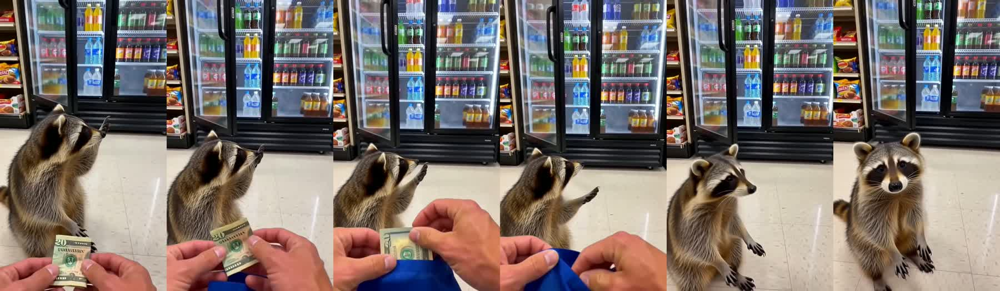
Frames at 0, 20, 40, 60, 80, 99 percent.
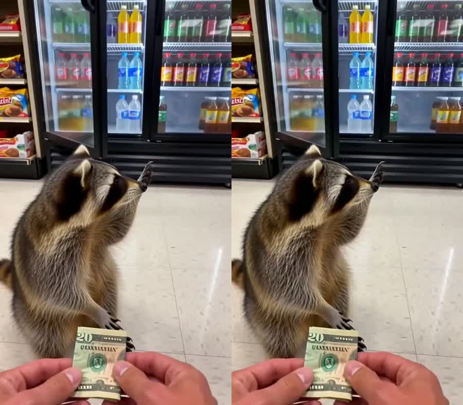
Seam: parent's held frame (left) vs this clip's first frame. Mean gray difference 1.9; motion inside this clip from 0 to 20 percent is 54.83; an unrelated clip is 65.13.
Prompt on screenNo hand and no cooler door in any sampled frame; the cooler stays closed in the background. The prompt's head-upside-down beat rendered as a second, deformed face at 80 to 99 percent.
Ends openA deformed raccoon. The scratching under the floor is sound only.
Seam to parentMean gray difference 2.1.
Move landed"Slam the cooler door shut" does not happen on screen.
Choices"Stomp on the floor panel" / "Ask what is down there": both refer to a sound the viewer may not register, and no floor panel is visible.
Written moves: “Stomp on the floor panel”, “Ask what is down there”
Prompt as rendered
integrated_multimodal_description: [Shot 1] Photoreal live-action, first-person POV at eye level, one continuous shot, natural head sway, no cuts. A right hand enters from the bottom of the frame, grabbing the edge of the open glass cooler door and swinging it hard to the left. The heavy glass frame strikes the metal casing with a deafening crash, sealing the unit shut. The bottles inside immediately stop rattling, leaving only absolute silence except for the hum of the fluorescent lights. The raccoon does not blink, its dark wet nose twitching once before it turns its head completely upside down between its front paws, staring up through its own legs into the lens. A low, rhythmic scratching sound begins directly underneath the metal floor panel below the cooler.
overall_soundscape: Fluorescent light hum, heavy glass door slamming shut against metal frame, sharp metallic rattle, low scratching sound vibrating from the floor.
non_diegetic_music: None.
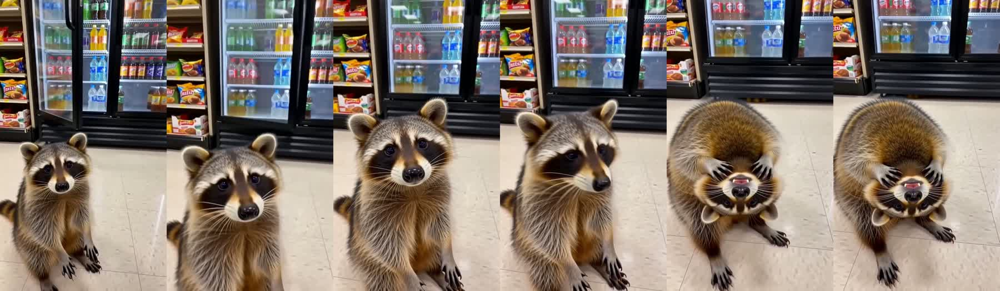
Frames at 0, 20, 40, 60, 80, 99 percent.
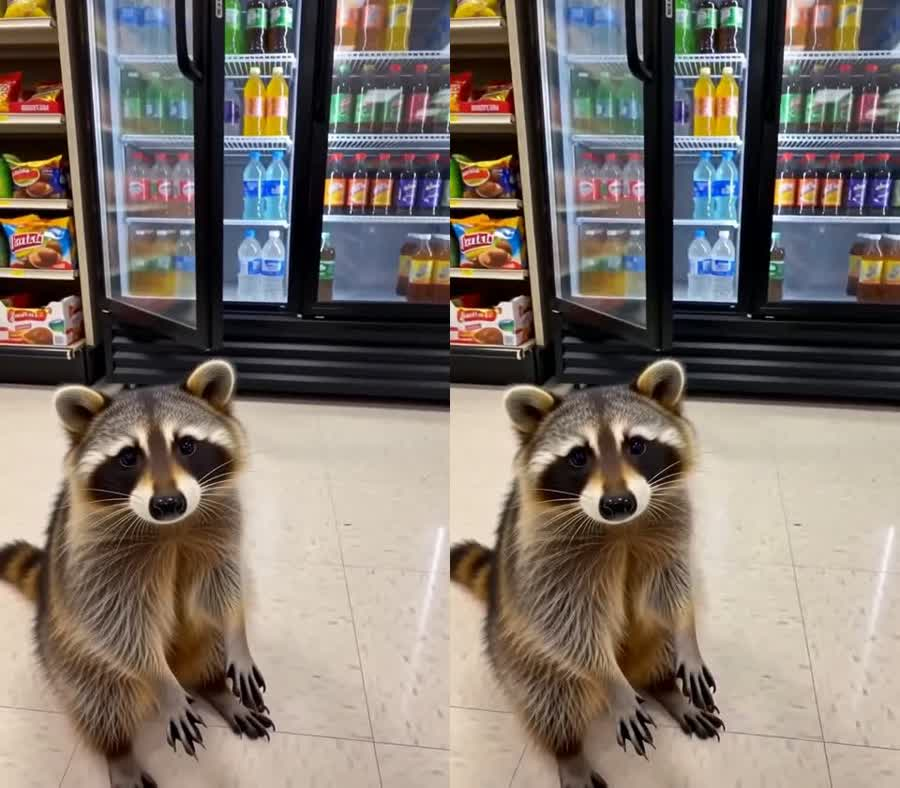
Seam: parent's held frame (left) vs this clip's first frame. Mean gray difference 2.08; motion inside this clip from 0 to 20 percent is 59.02; an unrelated clip is 62.4.
Episode 0ab
Move: “Ask the raccoon its name”typed by me, spokenstuck in “generating”: rendered at fal, Blob upload failed
source: local copy pulled from fal (settle blocked) · 768x1344 · 10.1s · 16.0 MB · audio yes
POV held
Style held
Premise facts held
Prompt on screenOpen cooler at the left of frame 0; the raccoon's mouth moves at 20 to 99 percent as the speaking character.
Ends openThe raccoon keeps talking; the door swing is not visible.
Seam to parentMean gray difference 1.8.
Move landedSpoken move: the raccoon answers with a name. The writer gave it a human voice, a fantasy turn the premise never set up, but a fair consequence of asking.
ChoicesNever written: settle blocked.
Written moves:none written
Prompt as rendered
integrated_multimodal_description: [Shot 1] Photoreal live-action, first-person POV at eye level, one continuous shot, natural head sway, no cuts. Looking down at the raccoon sitting upright on the linoleum floor with its unblinking black eyes locked onto the lens, its front paws pressed flat against the white tiles in front of the open drink cooler. The raccoon's lower jaw drops slightly, and (S1), a raspy, deep human voice originating from the small animal's open mouth, says <d>[English] People call me Barnaby.</d> The plastic water bottles inside the open refrigerator unit behind the raccoon suddenly stop rattling, and the heavy glass door slowly swings inward on its hinges toward the shelves.
overall_soundscape: Fluorescent light hum, low mechanical refrigeration rattle stopping abruptly, metal hinges squeaking softly, a gravelly voice speaking close to the floor.
non_diegetic_music: None.
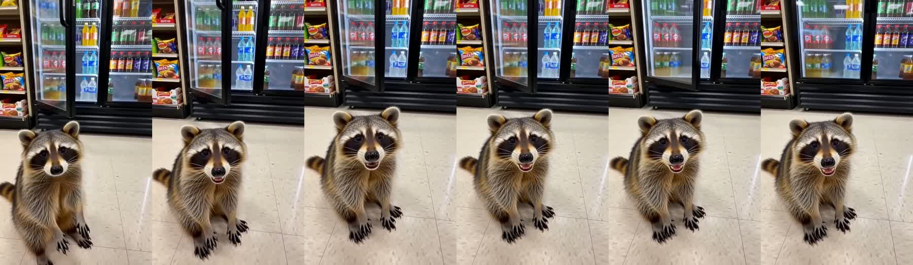
Frames at 0, 20, 40, 60, 80, 99 percent.
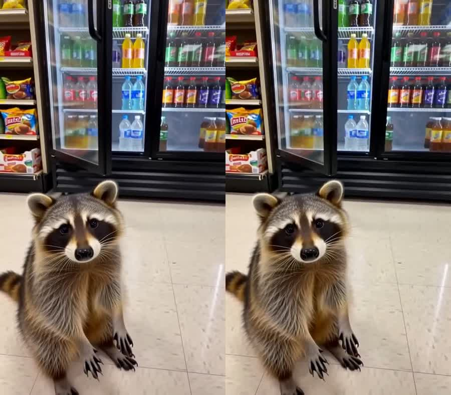
Seam: parent's held frame (left) vs this clip's first frame. Mean gray difference 1.75; motion inside this clip from 0 to 20 percent is 47.14; an unrelated clip is 62.4.
3. Pigeon Escapes the Balcony Rail
Premise “i'm a house cat in a tokyo apartment” non-human protagonist; premise fact must hold down the tree
TitleThe pigeon only starts to spread its wings. "Escapes" is an inference.
ExpanderAll three keep the viewer as the cat: balcony, bonito flakes, robot vacuum.
Three scenes offered
The narrow balcony door has been left sliding open just three inches, revealing the dizzying drop to the neon-lit Shibuya streets fifteen stories below. Right on the outermost railing, a fat gray pigeon lands with its back turned completely toward the opening. filmed
Morning light filters through the paper shoji screens as a human hurries past in work clothes, accidentally dropping an open, freshly drained tin of expensive bonito flakes onto the tatami mat. From beneath the low kotatsu table on the opposite side of the room, two green eyes belonging to the neighbor's visiting stray reflect the sunlight, fixed intensely on the same tin.
A robotic vacuum hums peacefully across the hardwood floor, inching closer to the towering scratching post in the corner. Balanced precariously on the absolute edge of the highest perch, a fragile, vintage porcelain beckoning cat statue begins to wobble as the vacuum forcefully bumps the base.
writer took the cat POV rule: 'first-person POV of a house cat, low to the floor', orange paws. Ends on the pounce toward the rail: a real cliffhanger 15 stories up. Scene said the door reveals the street 'fifteen stories below' and the writer kept that.
POV heldAn orange cat is visible from behind in all six frames. The camera follows the cat; it is not the cat's eyes.
Style held
Premise facts heldThe premise makes the viewer the cat. The clip makes the cat the subject.
Prompt on screenDoor gap, Shibuya, pigeon on the rail, cat mounts the box at 60 to 80, wings at 99: the beats are all there, in the wrong person.
Ends openPigeon spreading its wings, cat about to pounce.
Choices"Swat the pigeon's wing" / "Snag the metal railing": two paw acts of the same kind.
Written moves: “Swat the pigeon's wing”, “Snag the metal railing”
Prompt as rendered
integrated_multimodal_description: [Shot 1] Photoreal live-action, first-person POV of a house cat, low to the floor, one continuous shot, natural head sway, no cuts. The glass door stands ajar three inches, framing the neon blur of Shibuya far below and the gray back of a plump pigeon perched directly on the metal balcony railing outside. Two orange-furred paws press softly against the hardwood, creeping forward in absolute silence through the gap and onto the cool concrete balcony. The view rises as the front paws mount a plastic storage box below the railing, bringing the bird into close reach. Both hindquarters bunch up below the bottom of the frame, the gaze locking onto the pigeon's twitching tail feathers, and the front paws suddenly launch off the plastic lid straight toward the outer rail as the bird begins to spread its wings.
overall_soundscape: Muffled city rumble, faint siren wailing far below, soft clicking of cat claws on smooth concrete, plastic lid creaking under weight, sudden fluttering of pigeon feathers.
non_diegetic_music: None.
POV heldThird person through 60 percent, then at 80 to 99 a human hand in a gray sleeve enters from the bottom with the cat in front of it: the camera has become the human's.
Style held
Premise facts heldThe protagonist changed species mid-episode.
Prompt on screenSwat at 0, pigeon flaps at 20, cat tips off the box at 40 to 60, tea bottle at 80, hand at 99. Every beat present, none from the cat's eyes.
Ends openA hand reaching for the lens.
Seam to parentMean gray difference 2.1.
Move landedThe swat is in the first frame, performed by an on-screen cat.
Choices"Tip over the tea bottle" / "Bite the reaching fingers": two physical acts on different targets.
Written moves: “Tip over the tea bottle”, “Bite the reaching fingers”
Prompt as rendered
integrated_multimodal_description: [Shot 1] Photoreal live-action, first-person POV of a house cat, low to the floor, one continuous shot, natural head sway, no cuts. An orange-furred paw reaches up from the bottom of the frame and slaps the gray pigeon's wing as it lifts off the black metal railing. The pigeon thrashes in mid-air, feathers scattering against the neon-lit Shibuya backdrop, while the view tips sideways off the plastic storage box toward the concrete floor. The hind claws scrabble against the smooth plastic lid, slipping off the edge as the entire body drops four feet down onto the balcony floor with a dull thud. A glass bottle of green tea stands two inches from the nose, vibrating against the concrete as a heavy boot steps onto the hardwood inside the open door frame. A hand in a gray sleeve reaches out across the threshold, its fingers curling open right in front of the lens.
overall_soundscape: Loud fluttering of wings, sharp thud of claws on plastic, heavy metallic clunk, dull impact on concrete, rumbling city traffic, faint drone of a helicopter.
non_diegetic_music: None.
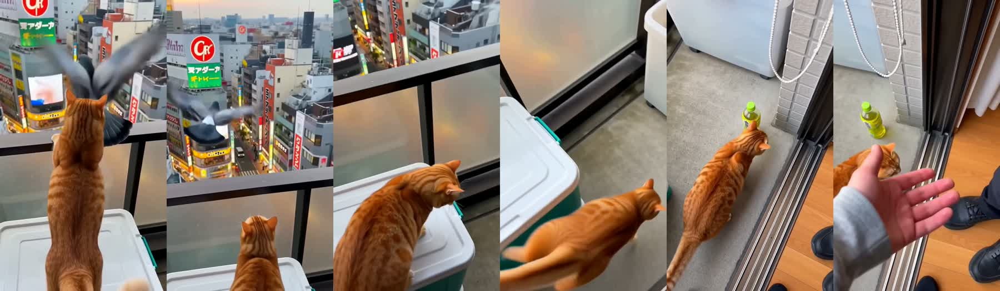
Frames at 0, 20, 40, 60, 80, 99 percent.
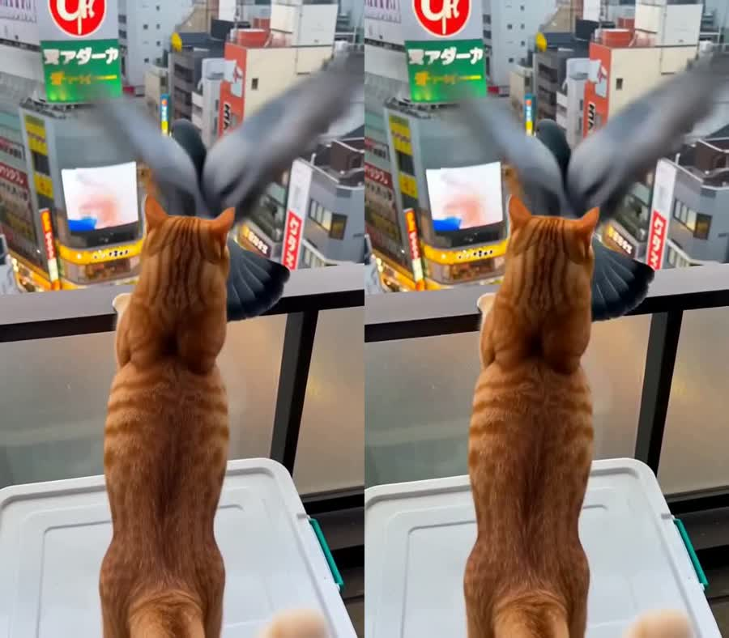
Seam: parent's held frame (left) vs this clip's first frame. Mean gray difference 2.14; motion inside this clip from 0 to 20 percent is 57.81; an unrelated clip is 68.94.
Episode 0aa
Move: “Tip over the tea bottle”stuck in “generating”: rendered at fal, Blob upload failed
source: local copy pulled from fal (settle blocked) · 768x1344 · 10.1s · 14.3 MB · audio yes
POV heldThe human's own hand and black shoes sit at the bottom of frame; the cat is small at the left. The viewer is the human now.
Style held
Premise facts held
Prompt on screenBottle on its side from 20 percent on, door sliding shut at 80 to 99 as written. The hand that did it is human at 0 to 20, a paw at 40 to 60.
Ends openThe door closing on the balcony.
Seam to parentMean gray difference 1.6.
Move landedThe bottle goes over early, but the actor is ambiguous.
ChoicesNever written: settle blocked. Prompt note: dialogue tagged [Japanese] but written in English.
Written moves:none written
Prompt as rendered
integrated_multimodal_description: [Shot 1] Photoreal live-action, first-person POV of a house cat, low to the floor, one continuous shot, natural head sway, no cuts. An orange-furred paw reaches up from the bottom of the frame and strikes the side of the green plastic bottle, sending it rolling across the concrete balcony floor with a sharp clatter. The bright yellow-green liquid sloshes violently against the clear plastic walls. The hand in the gray sleeve pulls backward across the wooden threshold, and the black leather shoe shifts on the floorboards. (S1), a young male voice, says <d>[Japanese] Hey, what are you doing out here?</d> The metal sliding door begins to glide along its tracks toward the frame, narrowing the gap of daylight as it slides shut.
overall_soundscape: Sharp plastic clatter of the rolling bottle, sloshing liquid, fabric friction against the door frame, heavy slide of a metal door, distant street traffic.
non_diegetic_music: None.
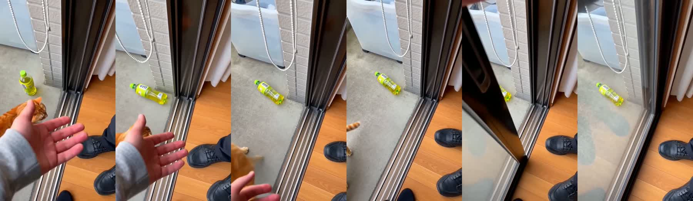
Frames at 0, 20, 40, 60, 80, 99 percent.
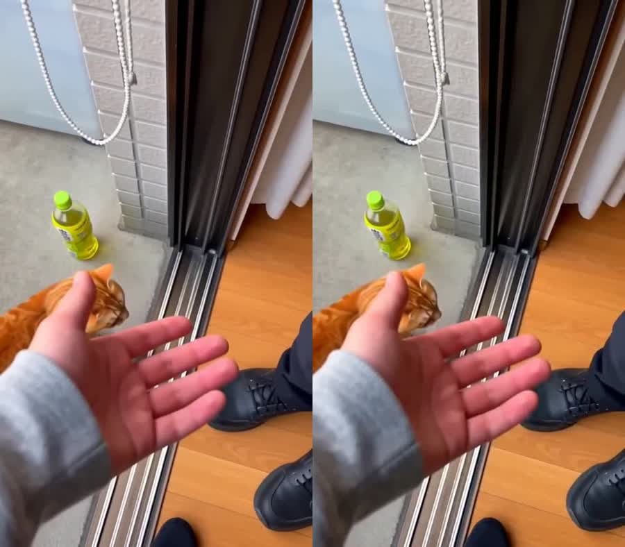
Seam: parent's held frame (left) vs this clip's first frame. Mean gray difference 1.56; motion inside this clip from 0 to 20 percent is 34.84; an unrelated clip is 77.3.
4. Croissant Leaps From The Tray
Premise “claymation. a bakery at dawn, the baker is my grandmother” style plus a relationship
TitleExactly what happens.
ExpanderEvery scene goes surreal (living croissant, radio batter, dough that pins her). The premise asked for a bakery at dawn, nothing more.
Three scenes offered
In a cozy claymation kitchen powdered with flour, grandmother pulls a tray of golden croissants from the oven with a warm, wrinkled smile. As she sets the hot tray right in front of you, one of the clay pastries suddenly blinks, wiggles its crescent tips, and lets out a tiny yawn. filmed
Grandmother is humming softly in the dawn light of the claymation bakery, using a wooden spoon to blend a vibrant, swirling batter that glows with impossible neon colors. She winks, scoops up a heaping dollop of the glowing mixture, and holds the spoon inches from your mouth just as the batter begins to emit a high-pitched radio broadcast.
Through the frosted windows of the claymation bakery, the morning sun catches grandmother as she kneads an enormous, groaning mound of dough on the butcher block. Without warning, the elastic clay dough snaps outward, instantly enveloping both of her arms and pinning her against the counter while the door chime rings to announce the first customer of the day.
all three scenes say claymation and keep grandmother. The style rule reached the prompt ('Claymation, first-person POV'); the writer made the hand 'sculpted from pale clay' on its own. Every scene goes surreal (living croissant, glowing radio batter, dough that pins her); the premise didn't ask for surreal.
POV heldA clay hand in a blue sleeve enters at 80 percent.
Style heldClaymation throughout, including the protagonist's hand.
Premise facts heldBakery, grandmother at the counter.
Prompt on screenCroissant opens its eyes at 20 to 60, grandmother's smile drops at 80, the leap with teeth fills the frame at 99.
Ends openTeeth at the lens.
Choices"Swat it with a spatula" / "Catch it in the towel": two defensive physical acts of the same kind.
Written moves: “Swat it with a spatula”, “Catch it in the towel”
Prompt as rendered
integrated_multimodal_description: [Shot 1] Claymation, first-person POV at eye level, one continuous shot, natural head sway, no cuts. The flour-dusted wooden countertop stretches forward, holding a black metal baking sheet full of golden, bumpy clay croissants. Standing across the counter, grandmother, a clay figure with textured grey hair tied in a bun, wire-rimmed glasses, and a blue calico apron, beams warmly. In the center of the tray, one curved pastry opens two dark bead eyes, flexing its crescent ends like small arms and parting a seam along its flaky body with a squeaky peep. Grandmother's smile vanishes, her sculpted mouth dropping into a small round circle behind her glasses. A right hand sculpted from pale clay extends from the bottom of the frame toward the living pastry. The croissant snaps its doughy body upward, leaping off the tray directly toward the camera with tiny clay teeth bared inside its split seam.
overall_soundscape: Soft humming of an old oven cooling down, a tiny high-pitched pastry yawn and squeak, grandmother's sharp intake of breath, the metallic scrape of the baking tray, and a sudden wet clay slap as the pastry springs forward.
non_diegetic_music: None.
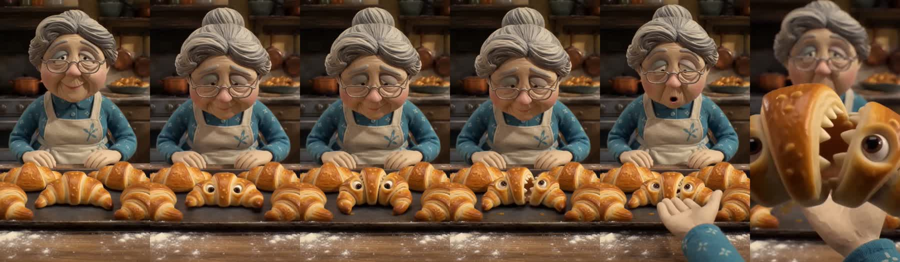
Frames at 0, 20, 40, 60, 80, 99 percent.
Episode 0a
Move: “Swat it with a spatula”stuck in “generating”: rendered at fal, Blob upload failed
source: local copy pulled from fal (settle blocked) · 768x1344 · 10.1s · 9.2 MB · audio yes
POV heldClay hand with the spatula at 40 percent.
Style heldHeld from the root.
Premise facts held
Prompt on screenSpatula at 40, croissant gone, grandmother's hands to her face at 60 to 99, the whole tray wakes at 99.
Ends openA tray of teeth.
Seam to parentMean gray difference 1.5, the best of the run.
Move landedThe swat lands between 20 and 40 percent.
ChoicesNever written: settle blocked.
Written moves:none written
Prompt as rendered
integrated_multimodal_description: [Shot 1] Claymation, first-person POV at eye level, one continuous shot, natural head sway, no cuts. The living croissant lunges forward with bared white clay teeth, its brown bead eyes locked on the lens. A pale clay right hand enters from the bottom of the frame, gripping a wooden spatula by the handle and swinging it sideways across the counter. The broad flat blade strikes the side of the pastry with a sharp wooden thwack, sending it spinning through the air and crashing into a flour bin. Grandmother gasps, her sculpted hands flying to her wire-rimmed glasses, and (S1), a crackling elderly female voice, says <d>[English] Heavens above, the whole batch is waking up!</d> Across the wooden countertop, the remaining golden croissants on the black metal baking sheet all at once snap open dark bead eyes and part their flaky seams.
overall_soundscape: A high-pitched aggressive pastry growl, the loud wooden thwack of the spatula strike, a heavy clay clatter against the flour bin, and a chorus of tiny metallic squeaks.
non_diegetic_music: None.
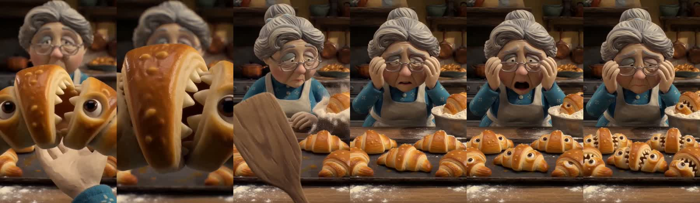
Frames at 0, 20, 40, 60, 80, 99 percent.
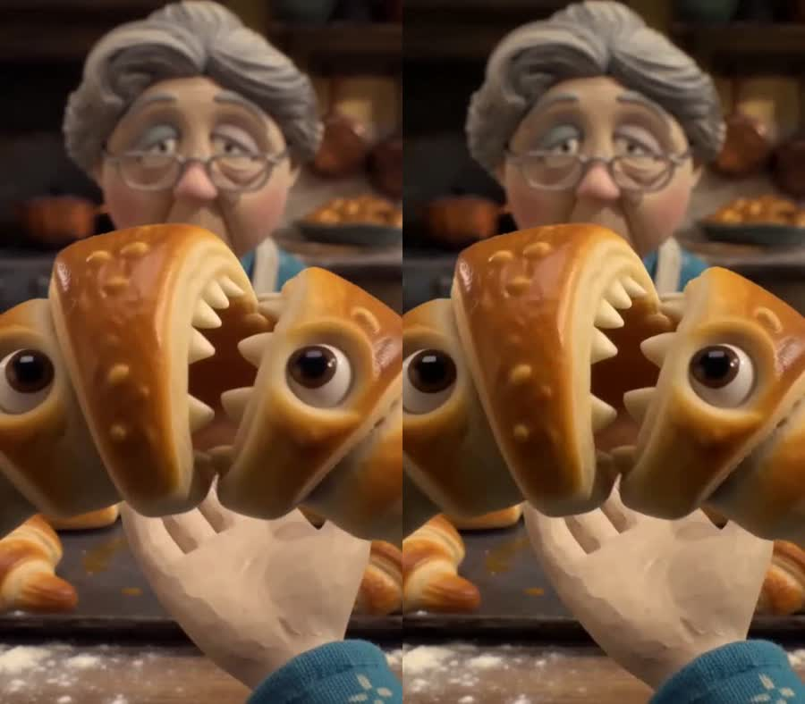
Seam: parent's held frame (left) vs this clip's first frame. Mean gray difference 1.5; motion inside this clip from 0 to 20 percent is 43.88; an unrelated clip is 69.64.
5. Elderly Woman Drops Phone
Premise “a stranger at a bus stop hands me a ringing phone and says don't hang up” cliffhanger written into the premise
TitleShe hands it over and runs; nothing is dropped.
ExpanderThe premise's own cliffhanger survives in all three, and each scene stacks a second one on top: sedans, a social security number read out, a man jumping in front of a bus.
Three scenes offered
Cold rain drips from the plastic bus shelter roof while an elderly woman in a drenched trench coat thrusts a buzzing flip phone into your fingers. She whispers, "Don't hang up," right as the bus headlights illuminate three identical black sedans screeching to a halt around the curb. filmed
A teenager in an oversized clown costume stumbles into the glass booth, shoving a brightly colored smartphone against your chest with a breathless plea not to hang up. Through the receiver, a digitized voice clearly begins reciting the exact sequence of your home address and social security number.
At a completely deserted downtown transit stop at midnight, a shivering man in a torn business suit frantically forces a vibrating rotary-style receiver into your hands and mutters not to hang up. Before you can process the archaic device, he leaps directly in front of the oncoming night express bus.
the premise's own cliffhanger (phone + 'don't hang up') survives in all three scenes, but the expander stacks a second cliffhanger on top of it every time (sedans, SSN read-out, man jumps in front of a bus). The writer rendered 'Don't hang up' as S1 dialogue with the correct tag format.
POV heldOne hand holding the phone from 40 percent on.
Style heldPhotoreal, cinematic rain.
Premise facts heldBus shelter, stranger, ringing phone, the line is said.
Prompt on screenPhone pressed into the hand at 0 to 20, she turns at 40, sedans at 60 to 80, doors open and figures at 99.
Ends openFour figures getting out of three cars.
Choices"Answer the ringing flip phone" / "Fling the phone into the street": both physical, opposite intents, both on the object in hand.
Written moves: “Answer the ringing flip phone”, “Fling the phone into the street”
Prompt as rendered
integrated_multimodal_description: [Shot 1] Photoreal live-action, first-person POV at eye level, one continuous shot, natural head sway, no cuts. Under the curved plexiglass of a rain-streaked bus shelter, an elderly woman with silver hair plastered to her forehead grips a scuffed, vibrating silver flip phone and presses it firmly into a right hand that rises from the bottom of the frame. (S1), an elderly woman with a raspy, trembling voice, leans close and says <d>[English] Don't hang up.</d> She pulls her hands back, turning her head toward the street as brilliant halogen headlights wash over the shelter. Three identical glossy black sedans skid diagonally across the wet asphalt, tires hissing against the downpour, boxing in the curb just feet away. Four car doors simultaneously pop open in the glare, and the woman bolts into the rain, leaving the phone vibrating continuously in the open palm.
overall_soundscape: Rain pattering against a plastic roof, the steady electronic buzzing vibration of the flip phone, car tires screeching and splashing on wet pavement, idling V8 engines, car doors clicking open.
non_diegetic_music: None.
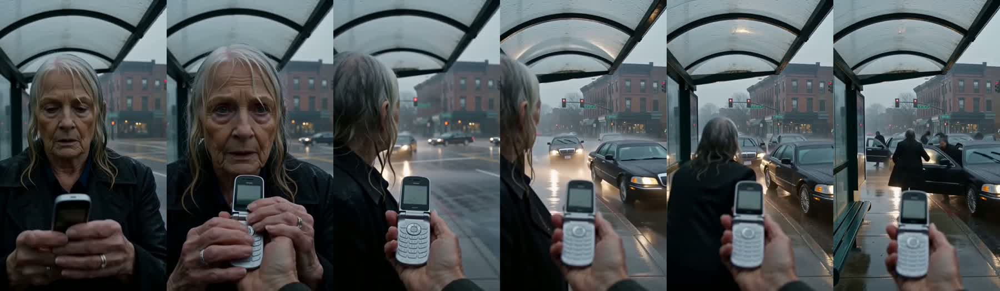
Frames at 0, 20, 40, 60, 80, 99 percent.
Episode 0a
Move: “Answer the ringing flip phone”stuck in “generating”: rendered at fal, Blob upload failed
source: local copy pulled from fal (settle blocked) · 768x1344 · 10.1s · 12.1 MB · audio yes
POV held
Style held
Premise facts held
Prompt on screenPhone open from frame 0, men crossing at 20 to 60, surrounding the shelter at 80 to 99.
Ends openBoxed in.
Seam to parentMean gray difference 2.1; the phone is already open in the parent's held frame.
Move landedThe open phone is the move; the snap itself is inside the first two seconds.
ChoicesNever written: settle blocked. Prompt note: the phone voice has no speaker tag, since only visible characters may speak.
Written moves:none written
Prompt as rendered
integrated_multimodal_description: [Shot 1] Photoreal live-action, first-person POV at eye level, one continuous shot, natural head sway, no cuts. Under the curved plexiglass of a rain-streaked bus shelter, a scuffed silver flip phone vibrates in a right hand extended from the bottom of the frame. A thumb presses the metal hinge, snapping the clamshell open. Beyond the phone, four figures in black coats emerge from the idling sedans, striding fast toward the shelter through the sheeting downpour. The phone speaker emits a sharp, electronic clicking sound against the steady rain. A deep, gruff male voice comes from the tiny speaker, saying <d>[English] She gave you the device, didn't she?</d> The figures step beneath the shelter roof, surrounding the opening.
overall_soundscape: Rain drumming on plastic and metal, rhythmic electronic phone vibration, boot heels splashing on wet concrete, idling car engines, heavy breathing close to the microphone.
non_diegetic_music: None.
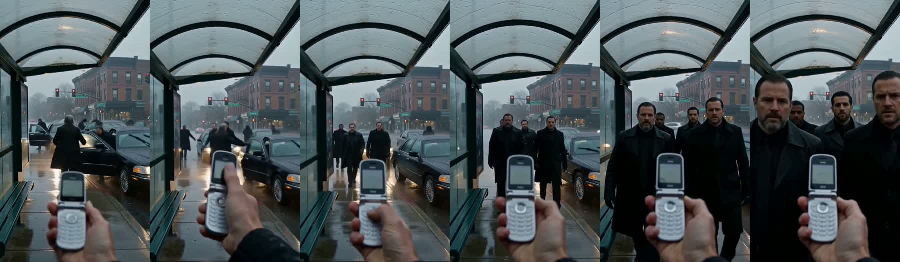
Frames at 0, 20, 40, 60, 80, 99 percent.
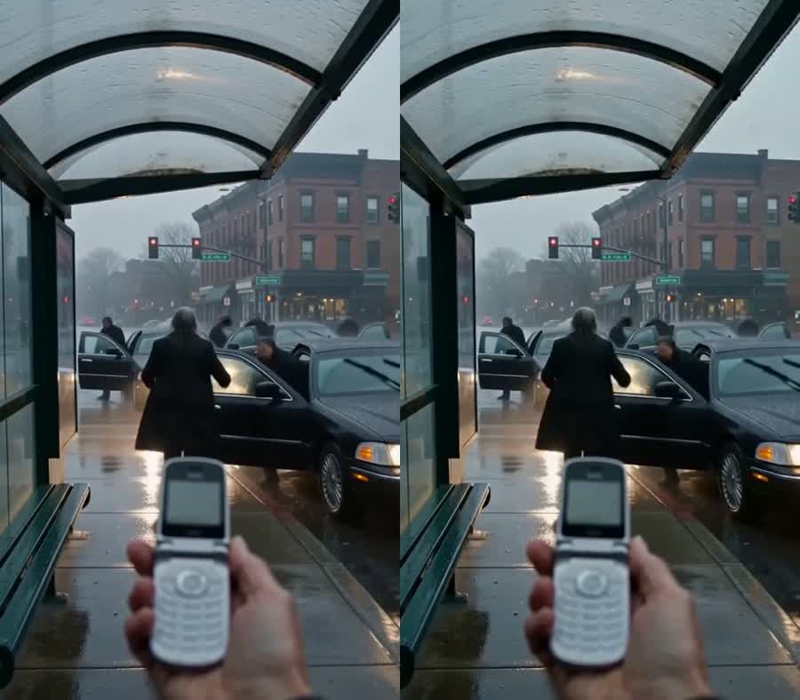
Seam: parent's held frame (left) vs this clip's first frame. Mean gray difference 2.07; motion inside this clip from 0 to 20 percent is 40.69; an unrelated clip is 72.97.
6. Tony Grabs the Envelope Back
Premise “The Sopranos. I'm the new waiter at Vesuvio, it's past midnight and the dining room is empty except the corner booth where Tony Soprano sits with Paulie Walnuts and Silvio Dante over espresso. Tony waves me over, slides a thick envelope across the tablecloth and says I never saw it. Then the kitchen doors bang open and Artie Bucco comes out holding a phone, white as a sheet.” detailed paragraph, named IP, three named characters, a specified cliffhanger
TitleExactly what happens.
ExpanderSame stacking: feds in the lot, a house fire, a caller asking for the waiter. The scenes also copied the premise's first person ("to me", "my knuckles"), which the writer then had to strip.
Three scenes offered
The heavy aroma of marinara and espresso hangs over the deserted tables as Tony Soprano slides the fat envelope across the linen to me, Paulie and Silvio watching in dead silence while Tony rumbles that I never saw it. The kitchen doors bang open and Artie Bucco stumbles out clutching the restaurant phone, his face drained of color as he stammers that the feds are turning into the parking lot right now. filmed
I stand frozen beside the corner booth as Tony shoves the thick white envelope right against my knuckles and warns me I never saw a thing, Paulie's pinky ring glinting as he points a finger. Artie Bucco bursts through the double swinging doors like a ghost, holding up the dangling receiver, and whispers in a trembling voice that Tony's house is on fire.
Late-night silence blankets Vesuvio while Silvio rubs his temples and Tony pushes the heavy cash envelope toward my chest with a blunt reminder that my eyes were closed. The kitchen doors violently kick open and a pale, sweating Artie Bucco hurries out with the receiver pressed to his chest, blurting out that someone just called demanding to speak to the guy who just took the envelope.
the premise's own cliffhanger (Artie with the phone) is kept in all three scenes, and every scene stacks a second one on top (feds in the lot, house on fire, caller asking for the waiter). The expander copied the premise's first-person voice ('to me', 'my knuckles') into the scenes; the writer correctly dropped it. Named characters get one-line likeness descriptions. Two speakers tagged S1/S2 with the right format. The writer pushes past the premise's stop point: Tony grabs the envelope back and police lights strobe.
Episode 0
Openingstuck in “generating”: rendered at fal, Blob upload failed
source: local copy pulled from fal (settle blocked) · 768x1344 · 10.1s · 7.8 MB · audio yes
POV heldNo hands appear; the camera is seated across the table. A standing waiter would look down more.
Style heldPhotoreal; the show's look.
Premise facts heldTony center with a cigar, Silvio right, Paulie left, Artie in an apron with a phone. Likeness from names alone.
Prompt on screenEnvelope pushed across at 0 to 40, Artie at 40 to 80, Tony grabs it back at 99, red and blue lights in the window at 80 to 99.
Ends openEnvelope pulled back as the lights arrive.
ChoicesNever written: settle blocked.
Written moves:none written
Prompt as rendered
integrated_multimodal_description: [Shot 1] Photoreal live-action, first-person POV at eye level, one continuous shot, natural head sway, no cuts. Across the white tablecloth of the corner booth, Tony Soprano, a heavy-set man in a dark polo shirt, pushes a thick manila envelope across the linen with a cigar in his mouth, flanked by Paulie Walnuts in a track jacket and Silvio Dante in a tailored suit. Tony looks up into the camera, and (S1), a heavy, gravelly male voice, says <d>[English] You never saw this, kid. Take it.</d> Behind them, the double kitchen doors swing open with a loud thud, and Artie Bucco, a bald man in an apron, runs out holding a cordless phone to his ear, his eyes wide. Artie stops by the booth, looking directly into the camera, and (S2), a high-pitched, panicked male voice, says <d>[English] Tony, the feds just pulled into the lot!</d> Tony drops his cigar onto his saucer, his eyes darting to the envelope, and reaches across the table to grab the envelope back just as blue and red emergency lights begin strobing through the blinds on the dining room windows.
overall_soundscape: Murmur of late-night HVAC, heavy thud of swinging kitchen doors, squeak of rubber soles on tile, clink of ceramic saucer, muffled distant sirens whining outside.
non_diegetic_music: None.
episodes.json (every row and prompt), media.json (probe and seam numbers), timings.json, verdicts.json, server-log.jsonl (the dev server's log for the run), series/*.json (the create page's scenes and prompts as shown), frames/ and strips/. Clips for the stuck episodes are under out/app-eval/2026-09-02T15-59-15/ and are not committed.